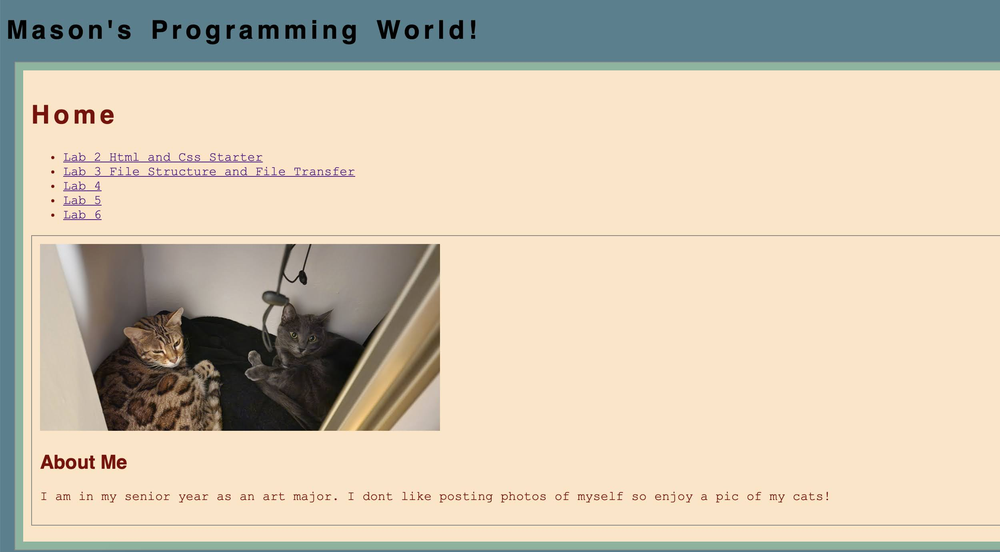
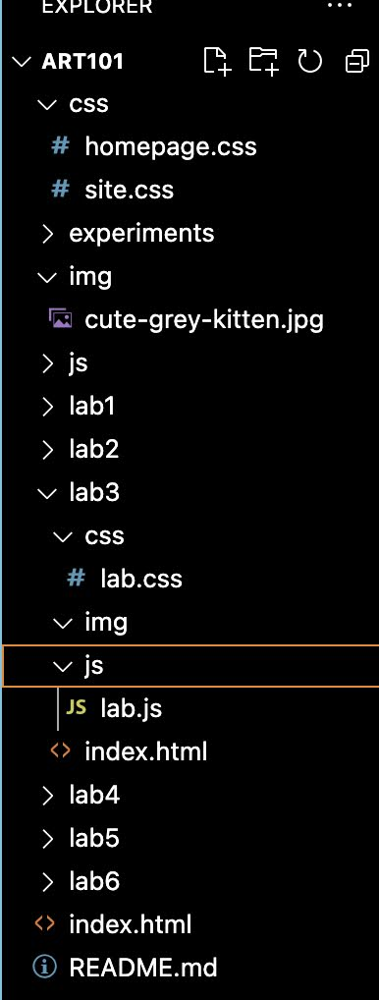

Lab 3 - Subject/Topic
Challenge
This lab is focused on file structures!
Problems
I feel like I understand linking files and photos pretty well after last lectures, so minor-section of my problems were just trying to style and go beyond the lab requirements. I also dont know how to convert pngs to jpgs so I can post them on my website. I know there are online converters, but I dont trust those things. Maybe I'm being dramatic. ... nvm I figured it out later.
Reflection
I'm having a hard time changing some of the colors. I aked wesbot but it didn't really help so I need to make an appointment with my TA to figure out what I'm missing in my code.
Results
My cat Lamont
The new photo I put in my homepage.
File Structure
 id="output">